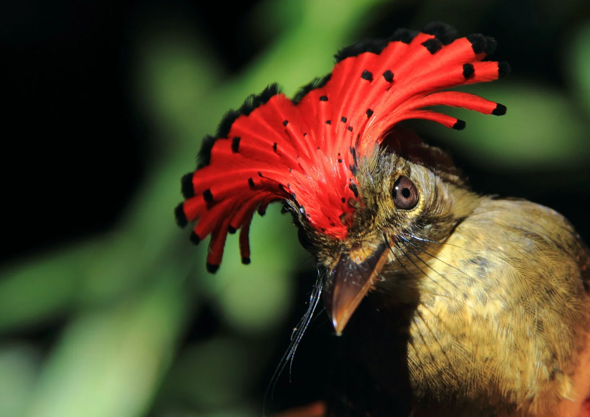
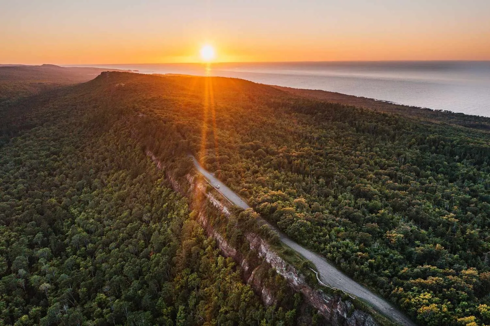
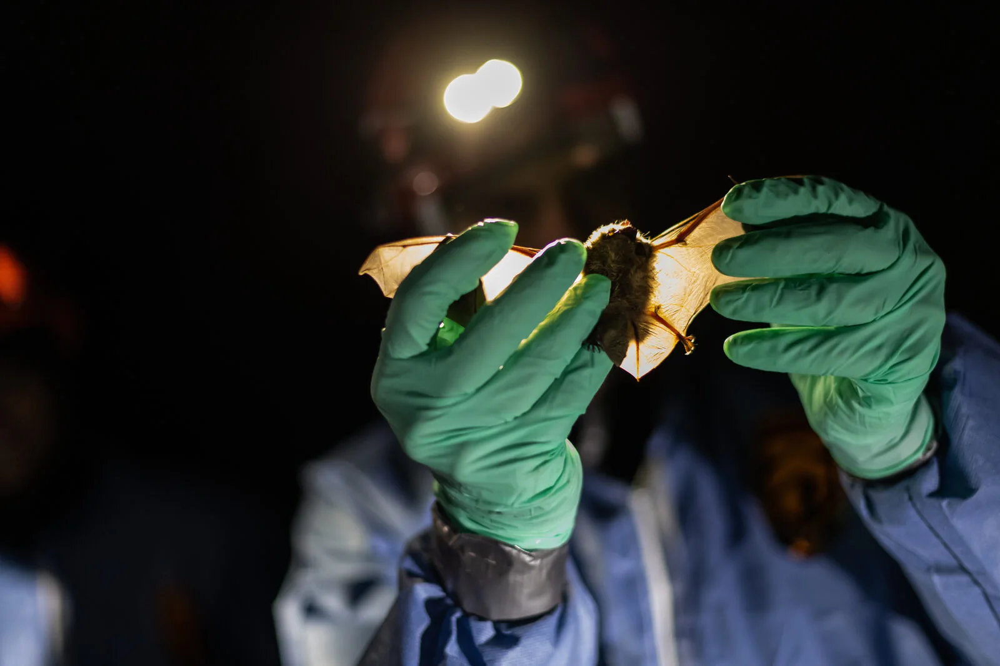
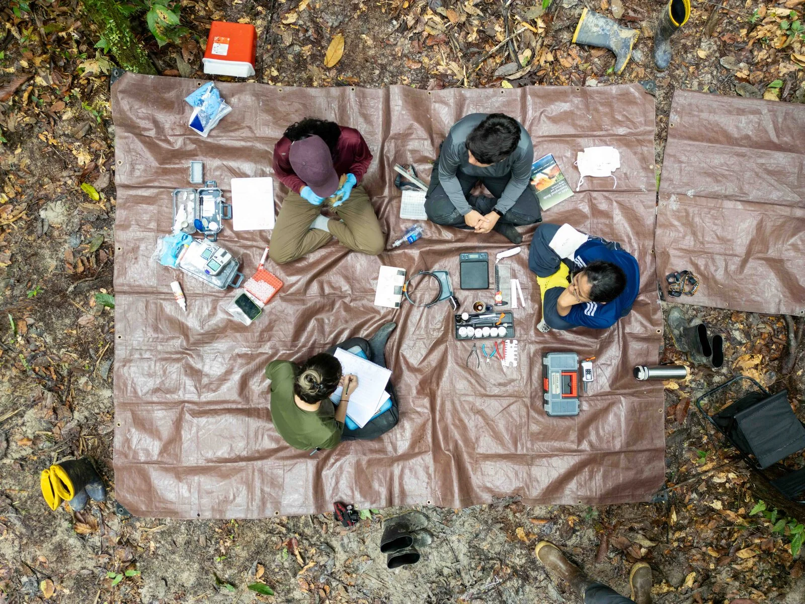

Research
Ecology across scales.
We combine long-term field studies, natural history, and quantitative models to understand how wildlife responds to climate, habitat change, migration, and disease—and to translate those insights into conservation action.

01 · Tropical systems
Climate change & tropical birds
Tropical forests are often treated as stable refuges, yet long-term demographic records are revealing rapid change. Our work follows individual birds across decades to understand how warming, drying, and forest disturbance influence survival and community persistence.
Current focus
- Long-term survival and population change in Amazonian understory birds
- NSF-funded IRRIGA experimental manipulation of dry-season rainfall in the central Amazon
- Dry-season temperature, precipitation, and demographic vulnerability
- Forest fragmentation, isolation, and climate interactions
- Collaborative monitoring across tropical sites in the Americas

02 · Movement
Migration & habitat quality
Migration connects distant landscapes. We study where birds stop, how they assess habitat, and how emerging technologies can reveal the places and conditions that sustain them during the most demanding periods of the annual cycle.
Current focus
- Stopover ecology across the Great Lakes region
- Automated acoustic monitoring of migratory birds
- Remote sensing of forest structure and habitat quality
- Practical strategies for reducing bird–building collisions

03 · Applied ecology
Wildlife disease & resilience
Wildlife health is shaped by the interaction of hosts, pathogens, climate, and landscape change. Our disease research joins field surveillance with experimental and spatial approaches designed to support concrete management decisions.
Current focus
- Microclimate manipulation in bat hibernacula affected by white-nose syndrome
- Tick-borne disease surveillance and risk mapping in the Upper Peninsula
- Small-mammal hosts, habitat, and pathogen prevalence
- Community partnerships and citizen-science surveillance

04 · Field science
Methods & life history
Strong inference begins with careful observation. We develop and refine field and analytical methods for studying demography, molt, movement, and population change while training students in rigorous, collaborative field science.
Current focus
- Development of the Wolfe–Ryder–Pyle system for universal avian age categorization
- Capture–mark–recapture and hierarchical demographic models
- Molt strategies and their evolution across environments
- Integrating banding, acoustics, radar, and remote sensing
- Open, reproducible workflows for long-term ecological data
Built through long-term collaboration.
Our research depends on field technicians, students, local experts, land managers, universities, agencies, and conservation organizations across the Americas. We value durable partnerships, shared expertise, and research that creates opportunities for the next generation of field ecologists.